Doelgroepen

dyslexie
dysorthografie
dyscalculie
ondersteuning bij het leerproces
articulatiestoornissen
afwijkend mondgedrag

dysartrie & motorische spraakstoornis
verbale apraxie
taal- ontwikkelingsstoornis
afasie

transgender
stemstoornissen

dysfagie
laryngectomie
Intake - Werkwijze
U kan telefonisch of via mail contact met ons opnemen op eigen initiatief of na doorverwijzing. Er volgt een intakegesprek waarbij volgende items aan bod komen:
- beluisteren van de hulpvraag en de voorgeschiedenis
- verstrekken van informatie betreffende het logopedisch onderzoek, het verloop van de behandeling en de honoraria met de voorwaarden van terugbetaling door het RIZIV of de aanvullende verzekering van uw mutualiteit
- bespreken van de aanpak van de behandeling in het kader van onze praktijk
- indien nodig en mits uw goedkeuring vragen we aanvullende informatie van betrokken personen of instanties zoals de school, CLB, arts...
Er wordt een afspraak gemaakt met de behandelende logopedist(e) voor een diagnostisch onderzoek dat één of meerdere sessies in beslag kan nemen, afhankelijk van de problematiek. Op basis van het aanvangsbilan bespreken we met u de resultaten van het onderzoek, het behandelingsplan en doen we een behandelingsvoorstel. De behandelingen kunnen doorgaan op de praktijk, aan huis, op school ( in overleg met de inrichtende macht), of op een andere locatie.
Deskundig maatwerk en een goed overlegmodel zijn de hoekstenen van onze praktijk.
Informatie omtrent de vernieuwde privacy wetgeving (GDPR) kan u hier terugvinden. Voor verdere vragen hierover contacteer ons gerust.
Honoraria
| Prestatie | Je bent
gewoon verzekerd |
Je hebt
verhoogde tegemoetkoming | |||||
| Bedragen van toepassing vanaf 1 April 2024 - Download de officiële RIZIV affiche | |||||||
| Honorarium | Terug-
betaling |
Remgeld
|
Honorarium | Terug-
betaling |
Remgeld
|
||
| Bilanzitting vóór het begin van een logopedische behandeling (per halfuur) | 42,75
|
35,25 | 7,50 | 42,75 | 39,75 | 3
|
|
| Evolutiebilan in de loop van een logopedische behandeling | 51,50 | 40,50 | 11,00 | 51,50 | 47,00 | 4,50
|
|
| Individuele zitting van minimaal 30 minuten | Op school | 34,91 | 28,91 | 6,00 | 34,91 | 32,91 | 2 |
| Buiten de school | 36,14 | 30,64 | 5,50 | 36,14 | 36,14 | 2 | |
| Individuele zitting van minimaal 60 minuten | 72,59 | 61,59 | 11,00 | 72,59 | 68,09 | 4,50 | |